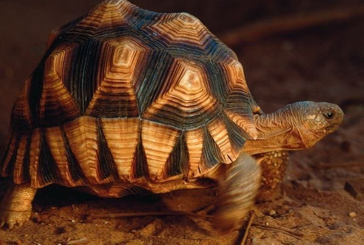

¿Cuando se considera una especie en peligro de extincion?
Se considera que una especie está en peligro de extinción cuando todos los representantes de la misma corren el riesgo de desaparecer de la faz de la Tierra.
¿Cuántos animales están en peligro de extinción?
Según datos de la Unión Internacional para la Conservación de la Naturaleza (UICN), el organismo internacional con mayor potestad sobre el problema, aproximadamente 5.200 especies de animales se encuentran en peligro de extinción en la actualidad. Además, en un desglose por clase, se encuentran en peligro de extinción el 11% de las aves, el 20% de los reptiles, el 34% de los peces y 25% de los anfibios y mamíferos.
Causas de que los animales estén en peligro de extinción
Existen múltiples causas por las que una especie puede llegar a encontrarse al borde de la extinción. Las razones pueden resultar tremendamente particulares para cada especie, pero en líneas generales, entre las mayores amenazas se encuentra la destrucción y fragmentación de sus hábitats; el cambio climático; la caza y tráfico ilegal; y la introducción de especies exóticas.
¿Cómo evitar la extinción de especies?
Conseguir que una especie deje de estar en peligro de extinción no es una tarea fácil. Evitar que una especie desaparezca implica la puesta en marcha de una gran cantidad de recursos y acciones concretas. Algunas de ellas serían evitar la fragmentación de sus hábitats, por ejemplo la deforestación; perseguir y castigar con dureza la caza ilegal y el tráfico de especies; la creación de reservas naturales; o el fomento de programas de reproducción, reintroducción y de mejora genética. La lucha contra la contaminación y el cambio climático también es la lucha por la conservación de muchos animales. Cada decisión personal tiene una consecuencia a nivel global en múltiples aspectos, de ahí la importancia de la concienciación social de la población para luchar contra la pérdida de biodiversidad.
ANIMALES EN PELIGRO DE EXTINCION EN EL MUNDO
- Gorila de montaña
- Oso polar
- Lince iberico
- Tigre de sumatra
- Rinoceronte blanco
- Leopardo de las nieves
- Oso panda
- Chinpance comun
- Pangolin
- orangutan de borneo
- Ajolote
- Atun rojo
ANIMALES EN PELIGRO DE EXTINCION EN ESPAÑA
- Cigüeña negra
- Lance ibernico
- Quebrantahuesos
- Oso pardo
- Aguila imperial blanca
- Urogallo cantabrico
- Foca monje del mediterraneo
- Vison europeo
- Rana pirenaica
- Mlavasia cabeciblanca
- Lagartija carpetana
- Lagartija de valverde
ANIMALES EN PELIGRO DE EXTINCION EN MEXICO
- Ajolote
- Jaguar
- Lobo mexicano
- Oso negro
- Vaquita marina
- Tortuga caguama
- Guacamayo rojo
- Ocelote
- Manati
- Tapir
- Mapache de cozumel o mapache pigmeo
- Musaraña de los tuxtlas
- Picamaderos imperial o carpintero imperial
- Conejo matorralero de la isla San Jose
- Rana fisgona mayor
- Picote tequila
- Pardela de townsend
- Tortuga del bolson
- Coqueta de Guerrero
- Quetzal
ANIMALES EN PELIGRO DE EXTINCION EN PERU
- Oso andino
- Condor andino
- Gto de los andes
- Oso hormiguero gigante
- Pudu
- Mono choro de cola amarilla
- Danta montañera
- Rana gigante del lago Titinaco
- Raton de las lomas
- Cortarramas peruano
- Nutria gigante
- Delfin rosado del amazonas
Aquí te dejamos algunas de las especies en peligro de extinción más llamativas y emblemáticas del planeta fotografiadas durante más de dos años por el fotógrafo de naturaleza Tim Flach. Como explica el propio autor, "quería crear imágenes que nos conmoviesen emocionalmente, de modo que nos sintamos obligados a cambiar nuestra relación con la naturaleza".
Ajolote

En el axolotl, los aztecas vieron una manifestación del dios Xolotl, quien llevó a las almas al inframundo junto con el sol poniente. Los aztecas veneraban la carne del ajolote (como se le puede nombrar) y atrapaban a las criaturas de la enorme red de canales y lagos que sostenían sus comunidades en el centro de México. Hoy, solo queda una fracción de este sistema acuático, y está siendo contaminado por los fertilizantes, pesticidas, heces y basura de la Ciudad de México.
Los axolotls, al igual que sus primos europeos, los olms, son neoténicos, lo que significa que alcanzan la madurez sexual luciendo como larvas conservando sus agallas y cola. Esto provoca que no se desarrollen físicamente, pero se regeneran. El ajolote, como también se le conoce, hacer crecer las extremidades, los huesos y los órganos que les han sido dañados o cortados. Son mil veces más resistentes al cáncer que los mamíferosSi sobreviven a las amenazas modernas el tiempo suficiente para que comprendamos sus células inmunitarias, podríamos realizar avances tremendos en numerosas terapias médicas.
Mandril
El estilo lo es todo cuando vives en un grupo tan grande como el de un mandril. Con una tropa de 1.300 ejemplares una vez registrada en los bosques de Gabón, se cree que los mandriles forman los grupos sociales más grandes de primates no humanos. Con sus llamativas caras y ojos, han evolucionado para exhibir la coloración más espectacular de cualquier especie de mamífero, cuya intensidad indica su estado social y sexual. Lamentablemente, no es solo su apariencia lo que es atractivo. La carne de mandril se considera un manjar en el oeste de África, y es parte de un comercio en crecimiento, con toneladas de carne de animales silvestres introducidas de contrabando en el oeste de Europa a diario. Debido a que los mandriles viven en grupos tan grandes, gran parte de su población puede caer en el comercio en auge en una sola cacería La tala y la agricultura también están limitando sus lugares de refugio por lo que estos notables animales necesitan urgentemente una protección más eficaz.
Osos polares

Los osos polares dependen del hielo marino para atrapar su presa. Se abalanzan sobre las focas cuando emergen a través de sus respiraderos y las acechan mientras toman el sol al aire libre, pero el hielo se está derritiendo a medida que nuestro clima se calienta. En los trece inviernos que siguen al año 2003 se produjeron las trece extensiones de hielo más pequeñas registradas por los satélites. Las temporadas de caza son cada vez más cortas, y por cada semana de hielo que se pierde en los inviernos del Ártico, los osos polares pierden alrededor 7 kg de grasa.
Mono dorado de nariz chata

Localizado a lo largo de las montañas del centro de China, el mono dorado de nariz chata soporta algunos de los inviernos más duros de cualquier primate no humano puede soportar. Su capa de pelo larga y suave lo protege de los vientos helados mientras que su rostro desnudo soporta la mayor parte del frío. Ha sido cazado durante mucho tiempo por su hermoso pelaje, pero desde principios de la década de 1990, la caza furtiva se ha reducido gracias a una mayor protección del gobierno. No obstante, su número ha seguido disminuyendo a medida que se despejaron sus bosques para la obtención de madera y la creación de tierras de cultivo. Además, el turismo se ha expandido al amparo del crecimiento económico de China, y las manadas de monos se han visto fuertemente hostigadas y perseguidas para ser vistas. Tan solo alrededor de 120 ejemplares de esta especie sobreviven en la actualidad en estado salvaje.
Lemures
Solo queda el 10% de los bosques históricos de Madagascar, los cuales sustentan a estos lémures en peligro crítico. Con una gran pasión por el néctar, se cree que los lémures son los polinizadores más grandes del mundo. A diferencia de la mayoría de los primates, dan a luz a grandes camadas, por lo que prosperan en cautiverio, donde las tasas de supervivencia son altas. Pero debido a que han sido criados a partir de un grupo genético muy pequeño, las reintroducciones posteriores entrañan muchas complicaciones. Su conservación se logrará cuando simplemente los dejemos en paz en un dosel de selva virgen.
Lémur rufo blanco y negro del este de Madagascar

El lémur rufo blanco y negro del este de Madagascar tiene una de las voces más fuertes de todos los primates del mundo. Sin embargo, estas llamadas de alarma se han convertido en una responsabilidad peligrosa, ya que los cazadores furtivos pueden cazar a los lémures con facilidad para obtener su carne.
Huevos de rana arborícora
Los huevos de la rana arborícola de ojos amarillos miden alrededor de 3 mm de ancho. Ayer, los embriones no tenían ojos y, mañana, se volverán oscuros, como renacuajos. Si bien la tasa de gestación es precisa, responde a la temperatura, y el cambio climático está haciendo que las ranas eclosionen temprano o tarde, confundiendo a los depredadores y perturbando toda la cadena alimentaria.
Anfíbios en peligro de extinción
El clima cambiante también está fomentando la propagación de un hongo mortal conocido como el hongo quítrido de los anfibios. Los bosques de tierras bajas se vuelven más cálidos, pero a medida que aumenta la humedad, se forman nubes más gruesas en las montañas y el hábitat de estas ranas se vuelve mucho más frío. Como las ranas son ectotérmicas -dependen de fuentes externas para el calor corporal-, su sistema inmunitario se debilita y el hongo quítrido prospera. La enfermedad resultante, la quitridiomicosis, tiene anfibios afectados en todo el mundo, infectando y destruyendo más especies de vertebrados que cualquier enfermedad en la historia registrada. Un tercio de las especies de anfibios ahora están en peligro de extinción; alrededor de 120 ya se han perdido.
Olm, un curioso organismo
Hace 66 millones de años, cuando el impacto de un meteorito destruyó la mayoría de las formas de vida de la Tierra, el olm siguió nadando. Había surgido alrededor de 80 millones de años antes, en las cuevas más oscuras de lo que ahora es Europa del Este, y sin ninguna dependencia de la luz solar, apenas notó la quinta extinción masiva de la Tierra. Debido a que es ciego, el olm no ha desarrollado el colorido patrón de sus primos anfibios tropicales, y casi no tiene pigmentación alguna. Sin vergüenza, se orienta con el olfato, el oído, la electrosensibilidad y, se cree, que incluso detectando los campos magnéticos de la Tierra. Vive hasta cien años y puede sobrevivir durante diez años sin comida, pero necesita agua limpia. Los bosques que se encuentran sobre su hábitat actúan como purificadores, pero a medida que se convierten en tierras de cultivo, los contaminantes penetran su hogar subterráneo. Por primera vez en la larga y larga historia del olm, se ha vuelto vulnerable.
Tortuga angonoka

La tortuga más rara del mundo tarda 15 años en alcanzar la edad de cría. Esto hace que cada huevo robado, o cada árbol o arbusto talado sea un revés aplastante para esta especie al borde de la extinción. Se creía que la tortuga angonoka - Astrochelys yniphora- ya había desaparecido, pero en 1984 fue redescubierta en el noroeste de Madagascar. Durrell Wildlife Conservation Trust lanzó rápidamente un programa de cría en cautividad. En 1998, el único hábitat la tortuga angonoka fue nombrado oficialmente Parque Nacional -el primero creado para proteger una sola especie- y la Fundación Durrell logró liberar a cien individuos en libertad. Su redescubrimiento de también lo convirtió en uno de los animales más deseables del mundo para los vendedores ilícitos de especies raras y conchas ornamentales; cada éxito conservador se ha logrado en una lucha constante con este poderoso comercio ilegal internacional. Recientemente, la caza furtiva se ha intensificado, y todas las liberaciones en la naturaleza se han suspendido mientras los guardias luchan para asegurar el área, que ahora contiene solo unos pocos cientos de individuos.
Pangolin

Se estima que más de un millón de pangolines se comercializaron ilegalmente entre 2007 y 2017, convirtiéndolos en los mamíferos más comercializados del mundo. Son tímidos, sin dientes, en su mayoría nocturnos, y se quedan inmóviles cuando tienen miedo. Envueltos por una armadura de escamas de queratina, esta defensa los protege de sus depredadores históricos, pero los humanos simplemente pueden recogerlos y llevárselos. Los pangolines poseen una herencia evolutiva única, habiéndose separado de otros mamíferos mientras los dinosaurios todavía caminaban la tierra. Hay cuatro especies en África y cuatro en Asia; todos son ahora vulnerables a la extinción y dos están en peligro crítico.
Gorila occidental de las tierras bajas
Este es Djala, un gorila occidental de las tierras bajas, fotografiado en un santuario inglés dirigido por la Fundación Aspinall. Fue rescatado en Gabón en la década de 1980 cuando era un bebé, después de haber visto a toda su familia asesinada por cazadores furtivos. En el centro de rescate, superó gradualmente los profundos traumas de su niñez, y 30 años después fue llevado a casa, a los bosques de Gabón con su nueva familia. En la naturaleza, su salud ha mejorado: los bultos sobre su ojo izquierdo retrocedieron, perdió exceso de peso y continúa vivo a pesar de su vejez. El rescate y la reintroducción de gorilas es costoso, y algunos conservacionistas critican el enfoque, argumentando que los fondos podrían usarse con más eficacia para defender a estos animales en peligro de extinción en la naturaleza.
Chimpancé común
La deforestación se ha producido más lentamente en el oeste de África Central, al menos en comparación con otras regiones tropicales en el extranjero. El hábitat del chimpancé común se ha mantenido relativamente intacto, y sin embargo, se han perdido alrededor de las tres cuartas partes de su población en el último siglo. Esto es debido a que son ampliamente cazados por su carne, que se consume localmente y también se transporta de contrabando al extranjero. La agricultura, la tala de árboles, la extracción de petróleo, la minería y la construcción de carreteras atraviesan los bosques y fragmentan sus comunidades unidas. En la cultura africana tradicional, los chimpancés usualmente son representados como indignos de confianza. Su similitud con nuestra propia especie los hace parecer perversamente subversivos. Su extraordinario parecido es fascinante para nosotros, pero para ellos puede ser devastador; ellos también son susceptibles a los brotes de ántrax, Ébola y enfermedad respiratoria. A medida que profundicemos en sus territorios, las amenazas serán cada vez más severas.
Tamarino multicolor

El tamarino multicolor ha evolucionado en una pequeña área en el noreste de la selva amazónica. Su hábitat junto al río proporcionaba todas las presas y vegetación que necesitaban, pero a fines del siglo XVII se produjo un asentamiento humano. Este asentamiento ahora se ha convertido en el puerto de Manaus, una capital regional con más de dos millones de residentes. Gran parte del hogar de tamarino ha sido pavimentado, y aunque se puede encontrar en algunas áreas protegidas, el tamarino de manos rojas, especie invasora, le está "robando" la mayor parte de los alimentos y el poco hábitat que les queda. A diferencia de algunas especies de monos, el tamarino de varios colores no ha podido adaptarse a la vida urbana, y con frecuencia es asesinado por perros, automóviles y líneas eléctricas cuando cruza la ciudad entre fragmentos de bosque aislados. La presión económica continúa empujando a Manaus a crecer, haciendo que la extinción de este primate tan intrigante sea una posibilidad cada vez más real.
Monos de nariz chata de Yunnan

Los científicos descubrieron los monos de nariz chata de Yunnan en la década de 1890, no obstante luego se desvanecieron en la oscuridad, y se creía que se habían extinguido hasta que se descubrió otro en 1962. Se trata de unos de los primates más esquivos de la Tierra. Son seminómadas y viven en altitudes más altas que cualquier otro mono, en los espesos matorrales de bambú de las montañas Hengduan en el sudoeste de China. Al igual que sus primos de pelo dorado, enfrentan temperaturas invernales de menos -40 ° C, y tradicionalmente son venerados por la población local por su resistencia. Esta los ve como antepasados y los llaman "hombres salvajes de las montañas". Si China aplica efectivamente su protección de los bosques antiguos, el futuro de los monos de nariz chata de Yunnan mejorará significativamente, no obstante los altos niveles de endogamia seguirán siendo una amenaza seria. Las poblaciones supervivientes son tan pequeñas y están tan aisladas en la actualidad que es posible que no tengan suficiente diversidad genética para medrar en los próximos siglos.
Oso panda

En la década de 1980, el gobierno chino lanzó una de las campañas de conservación más grandes y caras de la historia para salvar al panda gigante. Se prohibió la caza furtiva, se protegieron los bosques y se logró el reconocimiento internacional de la difícil situación del panda. El esfuerzo eventualmente llevó a un aumento en la población silvestre del panda gigante, y en 2016, la especie fue finalmente clasificada como vulnerable. Muchos grupos se mostraron jubilosos y vieron la reclasificación como un triunfo del trabajo duro y la acción del gobierno; sin embargo a otros les preocupaba que esta nueva clasificación resultara engañosa, y pudiera disminuir la financiación e investigación
Mariposa Monarca

Las mariposas monarca se alimentan de algodoncillo, una planta tóxica que las hace venenosas ante posibles depredadores. Sin embargo los herbicidas están destruyendo millones de hectáreas de esta fuente de alimento esencial para las mariposas cada año. Estos inmensos y majestuosos enjambres están compuestos por individuos frágiles, que se enfrentan un entorno cambiante y un futuro profundamente incierto.
Guacamayos Militares

Los guacamayos militares tienen algunas de las voces más fuertes de los bosques de Sudamérica. No conocen sus llamadas de forma innata, sino que las aprenden de sus padres y compañeros, lo que da lugar a dialectos locales que distinguen a un grupo de otro. En la naturaleza, los guacamayos militares permanecen monógamos de por vida, y como mascotas son aves excepcionalmente leales. Su belleza y buena compañía los pone en gran demanda de la industria de mascotas, pero muchos comerciantes los toman de la naturaleza, en lugar de criarlos en cautiverio.
Águila filipina
El majestuoso águila filipina es una de las rapaces más grandes del mundo. Con alas cortas y fuertes se abre camino a través del dosel de vegetación con velocidad y precisión, en la búsqueda de serpientes, lagartos, monos, ardillas o pájaros. El depredador, situado en el rango superior de su cadena alimenticia, también reside en la parte superior del bosque, construyendo sus nidos en los árboles más altos que se quedan en una familia por generaciones.
Monos narigudos

A los monos narigudos les gusta moverse por un amplia área de distribución, no obstante su hogar está cada vez más fragmentado. Se trata de una especie que prospera muy mal en cautiverio, por tanto, preservarlos significa salvar los bosques. Sin embargo en Sabah, donde ellos y los elefantes locales son reconocidos como un reclamo turístico, tan solo el 15 % de los monos viven dentro de las áreas protegidas. Los bosques desprotegidos se están convirtiendo en granjas de camarón y plantaciones de aceite de palma. La situación en el vecino Kalimantan es igualmente grave. En total, un tercio de las selvas tropicales de Borneo han desaparecido desde 1973, la mayor parte alrededor de las franjas costeras, y la noción de "área protegida" ofrece poca defensa contra los explotadores comerciales. En 2011, Noruega otorgó a Indonesia mil millones de dólares como incentivo para proteger sus bosques; pero es muy poco y es demasiado tarde.
Tigres

En los últimos 100 años, la población mundial de tigres se ha reducido en un 97%, y tres de sus nueve subespecies se han extinguido. En 2010, las naciones en la que aun habitan los tigres hicieron un pacto innovador para duplicar la población mundial de tigres para el año 2022. Se comprometieron a proteger el hábitat natural y combatir el comercio internacional ilegal en torno a esta especie, centrándose en la demanda de vino tigre y varias medicinas tradicionales. A mediados del desarrollo de la iniciativa, en abril de 2016, se anunció un aumento mundial de tigres por primera vez en la historia: India, Rusia, Nepal y Bhután informaron sobre mejoras significativas. Desafortunadamente, las cifras siguen disminuyendo en todo el sudeste asiático, salvando el caso de un santuario en el oeste de Tailandia. Por otro lado Camboya ha declarado extintos a los tigres a nivel nacional, el tigre del sur de China casi ha desaparecido y el tigre de Sumatra -el último de Indonesia- también está en peligro crítico. Su futuro sigue siendo incierto, pero el deseo de proteger a nuestra megafauna más carismática claramente sigue vivo
Lince ibérico

Los conejos salvajes no fueron las únicas víctimas del virus de la mixomatosis que se extendió por Europa en la década de 1950, ni de los brotes de la enfermedad hemorrágica del conejo que comenzaron en los años ochenta. El lince ibérico, que se alimenta casi exclusivamente de estos animales, ha sido privado de alimento por la disminución de sus presas. Sufriendo también la degradación de los bosques y la presión de la caza ilegal, el lince ibérico casi se extinguió en 2003. Habrían desaparecido durante diez mil años las primeras especies felinas del mundo, pero las autoridades españolas y portuguesas se comprometieron con un programa de cría en cautividad. Se recaudaron fondos con un "impuesto ambiental" sobre una compañía pública de agua que construyó una presa en tierras que alguna vez fueron territorios de linces. La población de linces ibéricos se ha elevado a cientos, pero los conservacionistas advierten que las reintroducciones en curso serán necesarias y que el cambio climático podría poner en peligro la calidad de su hábitat.
Leopardo de las nieves

Los leopardos de las nieves, ocultos entre las áridas montañas de Asia Central, son conocidos desde hace tiempo como uno de los felinos más esquivos del mundo. En 2016, una investigación con tecnología de rastreo por GPS mostró que un leopardo de las nieves necesita hasta 207 kilómetros cuadrados de territorio para sobrevivir, lo que hace que casi el 40% de las áreas protegidas de su hábitat resulten demasiado pequeñas para mantener incluso una pareja reproductiva. El calentamiento global, que ha afectado al Himalaya unas tres veces más intensamente que a otros lugares del mundo, está desplazando os bosques hacia las laderas y reduciendo los hábitats del leopardo de las nieves. También, los agricultores están alimentando al ganado y plantando cultivos cada vez a mayor altura, lo que aumenta las posibilidades de conflicto entre los leopardos de las nieves y los humanos. El Acuerdo de París 2015 fue un paso adelante para la conservación de estos felinos legendarios, pero hasta que sus tierras y su modo de vida estén protegidos, es probable que sigan en declive.
Antílope Saiga
Los antílopes Saiga son supervivientes de las glaciaciones que han compartido el mundo con mamuts lanudos y tigres dientes de sable. Sus extrañas narices han evolucionado para calentar el aire frío del invierno, pero también para expulsar el polvo levantado de las llanura en verano. Pueden anticipar el clima, desarrollar sus pelajes a modo de abrigo y emigrar al sur justo antes de que llegue la nieve. A principios de la década de 1990, había más de un millón de antílopes saiga en la estepa euroasiática, pero solo el 2% de esa población se conserva en la actualidad. En mayo de 2015, más de doscientas mil ejemplares murieron en pocas semanas debido al estallido de una enfermedad catastrófica, y se teme que tales eventos se vuelvan más frecuentes bajo las presiones ecológicas impuestas por el cambio climático. Los saigas son cazados furtivamente por sus cuernos retorcidos, que se venden en el este de Asia como analgésicos y antidepresivos, por lo que en poco tiempo podrían no quedar suficientes machos como para sacar a esta especie del peligro que se cierne sobre ella.
Grullas de coronilla roja
Las grullas de coronilla roja o grullas de Manchuria del noreste de Asia son muy conocidas por sus gráciles danzas de cortejo: arquean el cuello y luego saltan al aire, volviendo a posarse en el suelo con un golpe de alas para caer de puntillas alrededor de su compañero. Cazados por su espléndido plumaje, la población residente de la isla japonesa de Hokkaido cayó tan solo a treinta individuos durante la década de 1920, pero los agricultores locales intervinieron para salvarlos, y todavía los alimentan todas las mañanas hasta el día de hoy. Habiendo pasado por un cuello de botella en la población, estas grullas en peligro han visto muy notablemente reducida su diversidad genética, lo que les ha hecho en la actualidad tremendamente vulnerables a los brotes de muchas enfermedades. Mientras tanto, la pérdida y conversión de su hábitat de humedal en zonas de cultivo sigue siendo una amenaza universal. En el continente, las grullas de Manchuria todavía están en declive. El 92% de su hábitat en China se ha perdido en los últimos 30 años, y el que poco que queda está rodeado de ciudades, granjas y campos petroleros. Sus mejores posibilidades de supervivencia pueden estar en Japón, donde la comunidad nacional las valora más.
| ANIMALES | PAIS |
| Ajolote | México |
| Mandril | Africa Central |
| Osos Polares | Canada |
| Mono Dorado de Nariz Chato | China |
| Lemures | Madagascar |
| Lemur Rufo Blanco y Negro | Africa |
| Huevos de Rana Arboica | Australia, Nueva Guinea |
| Anfibios en Peligro | México |
| Olm, Un Curioso Organismo | Italia, Croacia y Bosnia |
| Tortuga Angonoka | Madagascar |
| Pangolin | China y Vietnam |
| Gorila Occidental | Nigeria, Guinea Ecuatorial |
| Chimpance Comun | Centro de Africa |
| Tamarindo Multicolor | Colombia |
| Monos de Nariz Chata Yunnan | China |
| Oso Panda | China |
| Mariposa Monarca | México |
| Guacamayos Militares | México |
| Aguila Filipina | Filipinas |
| Monos Narigudos | Malasia |
| Tigres | Banglades |
| Lince Iberico | España y Portugal |
| Leopardo de las Nieves | China, Butan, Nepal, India, Pakistan, Afganistan, Rusia |
| Antilope Saiga | Rusia |
| Grullas de Coronilla Roja | Noreste de China |